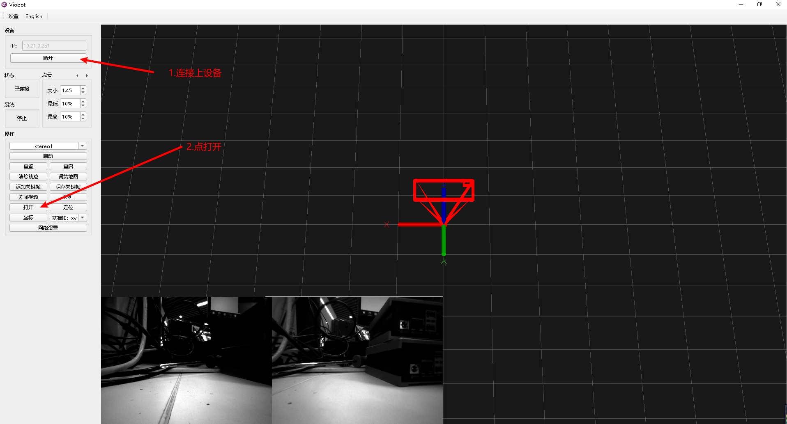
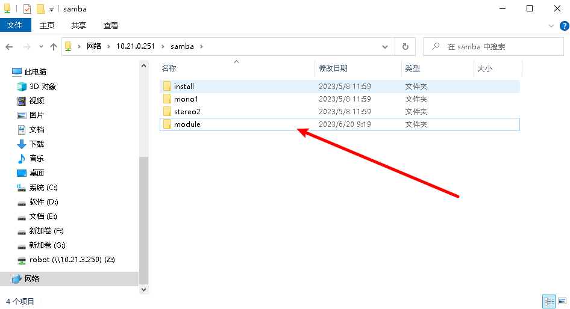
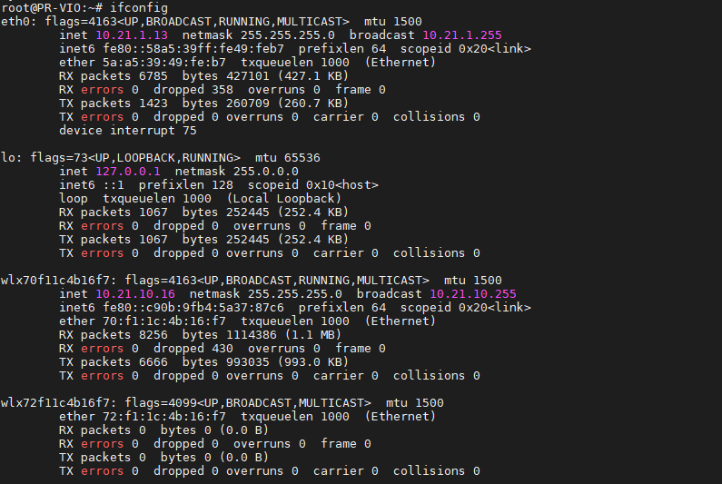

网卡挂载与连接wifi
1.把驱动文件放到设备里面

打开了一个网络文件夹，用户：root 密码：PRR

查看samba文件夹里面是否有module文件夹，如果没有则新建

把8188eu.ko文件拉到module文件夹下（pro版对应文件是pro-8188eu.ko）

2.网卡挂载
挂载网卡：
ssh进到设备里面，用户：PRR 密码：PRR
基础版：
sudo insmod /home/PRR/Viobot/module/8188eu.ko #基础版
pro版：
sudo insmod /home/PRR/Viobot/module/pro-8188eu.ko #pro版
3.连接wifi
1）查看设备状态
nmcli device

这里的网卡名称为wlx70f11c4b16f7
2）搜索wifi
nmcli device wifi list #会出来可见的WIFI列表

3）连接无线热点
sudo nmcli device wifi connect "PRROBOT" password "12345678" #PRROBOT对应你的SSID,12345678对应你的密码
4）查看连接状态
nmcli connection show

5）查看当前网络IP
输入ifconfig查看当前连接的ip

用自己的电脑ping一下wifi的ip测试是否能用，需注意网段。
6）其他
这个方式直接连接wifi的IP是自动分配的，如果需要设置静态IP：
sudo nmcli connection modify PRROBOT ipv4.addresses '10.21.10.16/24' ipv4.gateway '10.21.10.1' ipv4.dns '8.8.8.8' ipv4.method manual
PRROBOT对应nmcli connection show显示的name，ip : 10.21.10.16 ，掩码需要换算一下：255.255.255.0对应24 ，网关：10.21.10.1，DNS：8.8.8.8 注意：静态IP需要保证你设置的IP不会与别的设备冲突。
如果要重新设置为自动获取IP：
sudo nmcli connection modify PRROBOT ipv4.method auto
设置完之后需要重新连接一下：
sudo nmcli connection up PRROBOT
再重新用ifconfig查看ip即可
4.设置开机自动连接wifi
创建一个 systemd service 文件：
sudo vim /etc/systemd/system/wifi-startup.service
将下面的内容写入文件里面：
[Unit]
Description=Start wifi
After=network.target NetworkManager.service
Requires=NetworkManager.service
[Service]
Type=simple
User=root
Group=root
ExecStart = insmod /home/PRR/Viobot/module/8188eu.ko
[Install]
WantedBy = multi-user.target
pro版本将ExecStart = insmod /home/PRR/Viobot/module/pro-8188eu.ko 替换为 ExecStart = insmod /home/PRR/Viobot/module/8188eu.ko
使 systemd 开始管理这个新 service：
sudo systemctl enable wifi-startup.service
重启设备即可